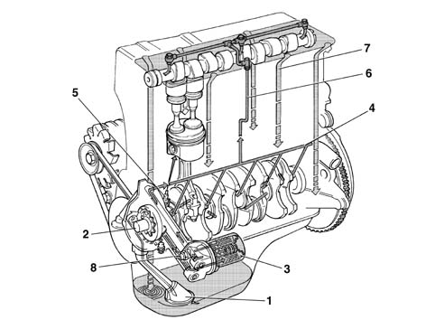
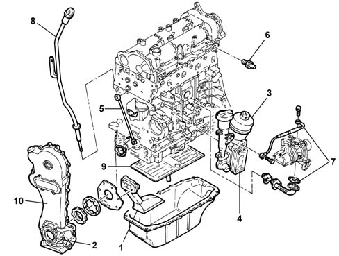
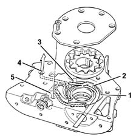
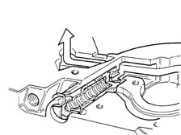
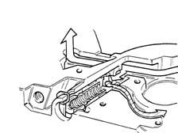

Introduction - ENGINE LUBRICATION SYSTEM
- Path
- Descriptions > 10 ENGINE > 1084 ENGINE LUBRICATION SYSTEM > Introduction - ENGINE LUBRICATION SYSTEM
- Kind
- system description
- Applies to
- all engines; all production periods
- Interactive page
- https://sloeber94.github.io/elrnDB-fPnd/en/#/2753462
Applies to: engines: 1.1, 1.2 8v; all production periods
VIEW OF ASSEMBLY
.

1, Suction pipe with filter mesh 2, Oil pump 3, Oil filter cartridge 4, Main longitudinal duct 5, Sprays (piston skirt cooling) 6, Vertical duct (camshaft support lubrication) 7, Oil return to the sump 8, Switch for engine oil pressure warning light
Applies to: engines: 1.3 JTD 16v; all production periods
STRUCTURE
The engine lubrication system is represented below.

1 - Suction pipe with filter mesh 2 - Oil pump 3 - Oil filter cartridge 4 - Heat exchange (water oil) for cooling engine oil 5 - Spray jet (timing chain lubrication) 6 - Engine oil pressure warning light switch 7 - Turbocharger lubrication 8 - Engine oil level dipstick 9 - Engine oil level maintenance and scraper wall 10 - Timing chain cover
Applies to: engines: 1.1, 1.2 8v; all production periods
Engine oil pump
The engine oil is drawn in from the sump by means of the vacuum created by the rotation of the sprockets fitted on the crankshaft.
Vacuum is present between the sprocket separating wall (2) and the oil sump suction pipe.
Pressure instead develops after the separating wall (2) in all the oil delivery pipes (4).
When the pressure exceeds 5 bar, the force exerted on the limiting valve (5) overcomes the reaction of the spring below and moves the valve to open the connecting pipe between the pressure chamber (3) and the low pressure chamber (1).

1, Low pressure chamber 2, Separating wall 3, Pressure chamber 4, Oil delivery pipe 5, Pressure limiting valve
Applies to: engines: 1.1, 1.2 8v; all production periods
Closed operating position of oil pressure limiting valve.
.

Applies to: engines: 1.1, 1.2 8v; all production periods
Bypass operating position of limiting valve.
.
